Intelipark (Parking Finder App)
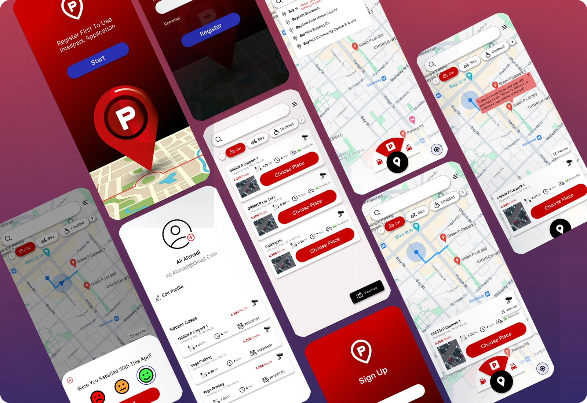
- Role
- UI/UX Designer
- Timeline
- 15 days
- Tools
- Figma, Google Meet
Intelipark is a parking finder for a Canadian company: it shows users nearby parking lots with their capacity, price and distance. The client handed us a document with the app’s purpose and required features, but instead of just working through the list, we held two meetings to understand why each feature mattered. That led us to suggest a few additions of our own, like paying in advance, availability notifications and ratings. In Figma, I built the screen flows, starting with search and filters and then adding the secondary features.
Problem Definition
Intelipark is a parking-finder app for a Canadian company, designed to help users search for and locate available parking spots online — viewing capacity, cost, and distance based on their current location.
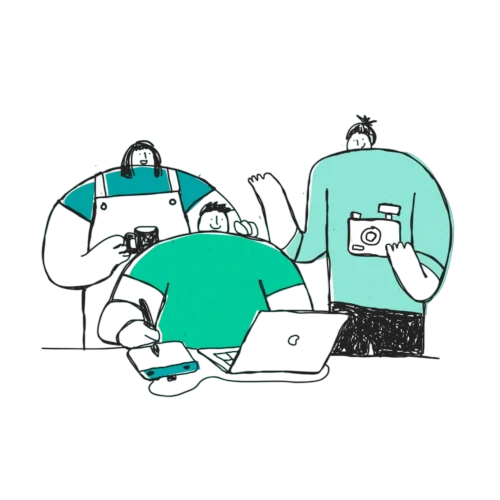
My Role
UI/UX Designer
The client shared documentation outlining the app’s purpose, goals, and required features (nearest parking search, pricing, capacity view, event-based traffic alerts, user profiles, vehicle-based filtering). Our role went beyond direct execution: we worked to understand the reasoning behind each feature and proposed our own additions, while the overall app concept remained grounded in the client’s documentation.
Project Objectives
- Finding the nearest parking place based on the user’s location
- Viewing the price of each parking lot
- Viewing the capacity of each parking lot
- Searching for parking lots
- Showing users events and ceremonies so they can estimate the amount of traffic
- Creating a profile for each user
- Displaying available parking spaces based on the user’s chosen vehicle
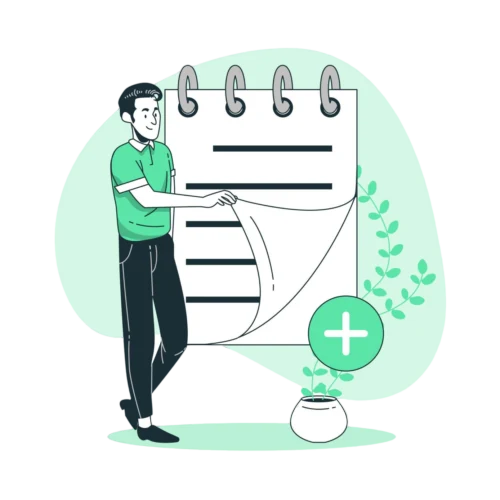
Design Process
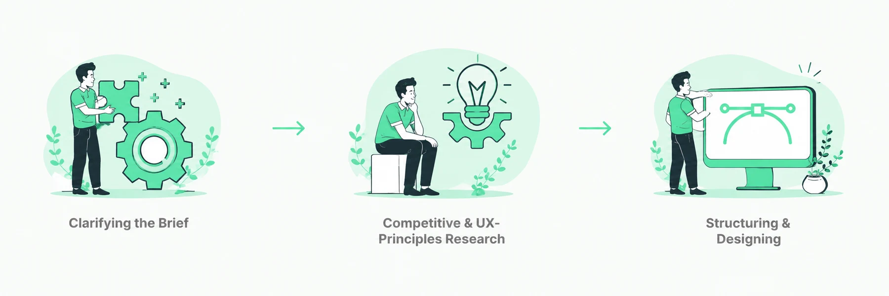
Clarifying the Brief
Reviewed the client’s documentation and held two meetings to go beyond the feature list — understanding why each feature mattered to users and the business. This deeper framing also surfaced a few feature suggestions of our own, which were incorporated into the scope.
Competitive & UX-Principles Research
Analyzed comparable parking and location-based booking platforms, then applied established UX principles (visual hierarchy, interaction and layout conventions) to guide where and how key elements — search, filters, pricing, results — should sit on screen, aiming for stronger usability rather than just visual similarity to references.
Structuring & Designing
In Figma, translated the clarified feature set into screen flows — prioritizing the search and filter experience first, then layering in secondary features (profile, event alerts). Proposed improvements beyond the original brief: in-app payment for advance reservations, availability notifications, and a review/rating system.
Onboarding & Location
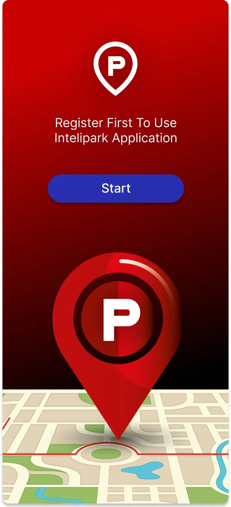
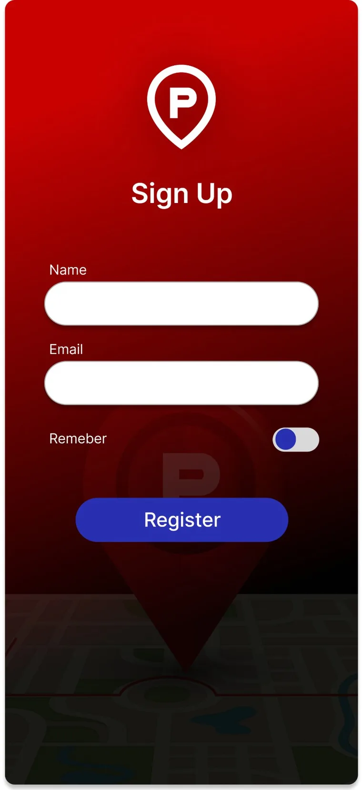
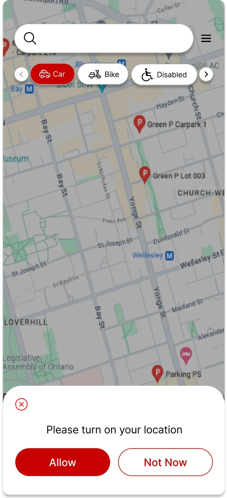
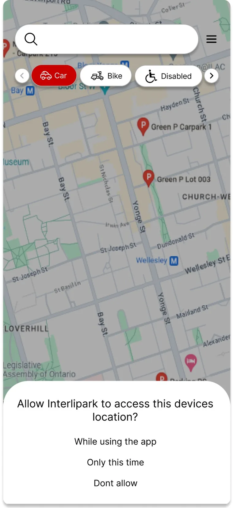
Map, Search & Results
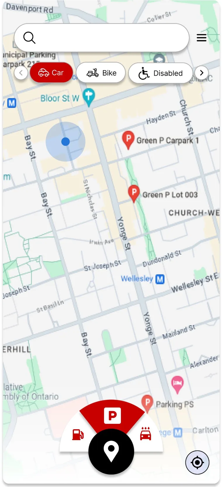
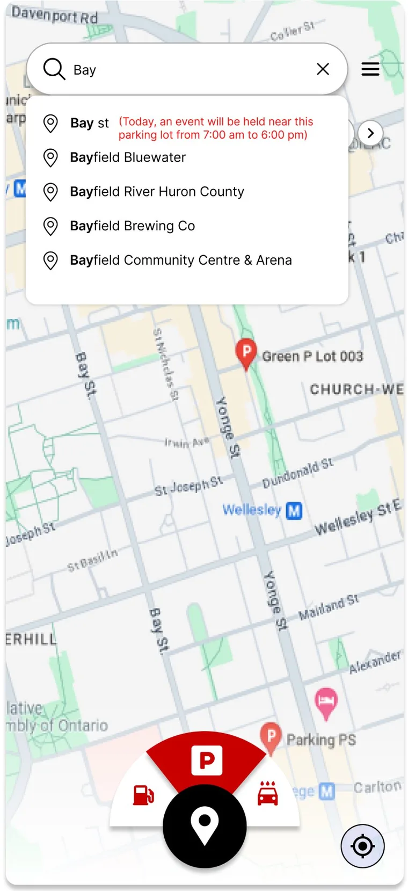
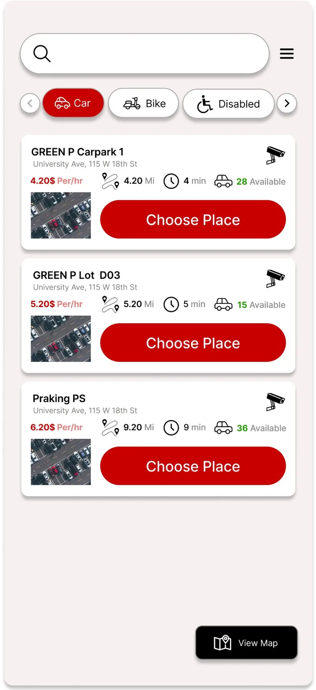
Navigation & Alerts
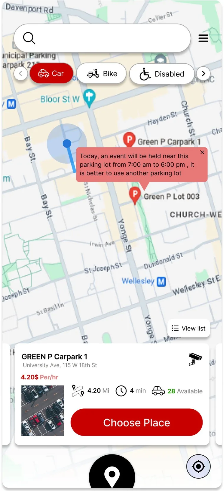
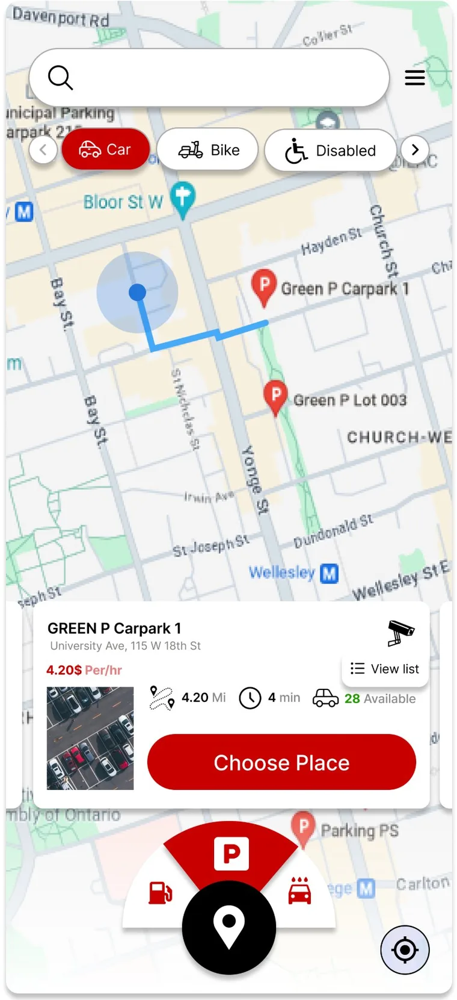
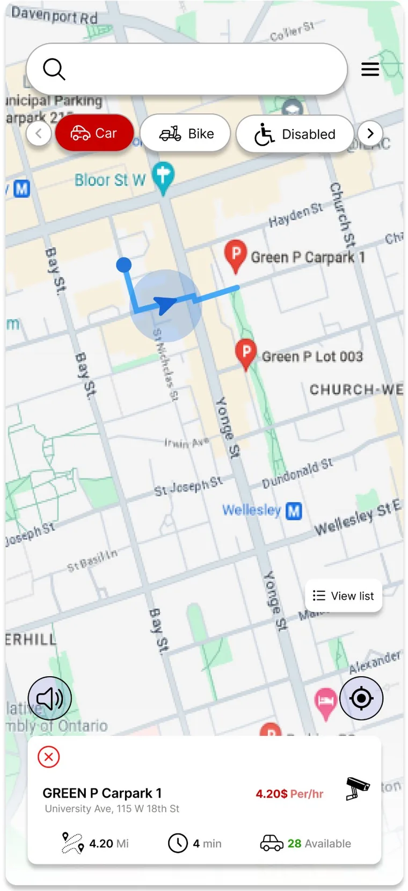
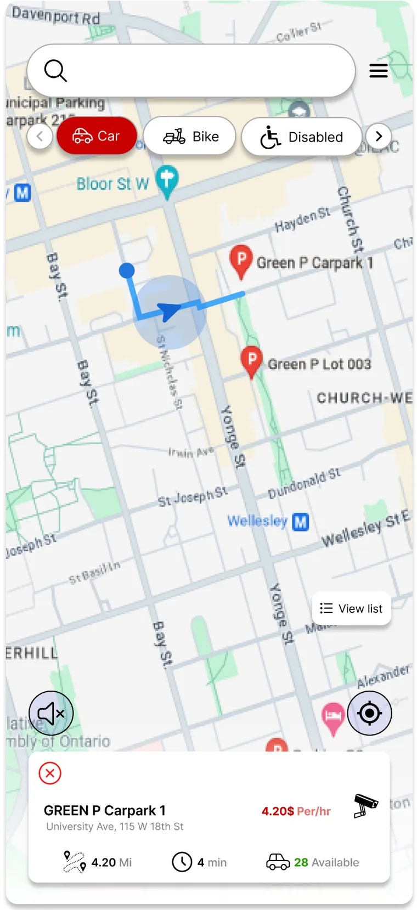
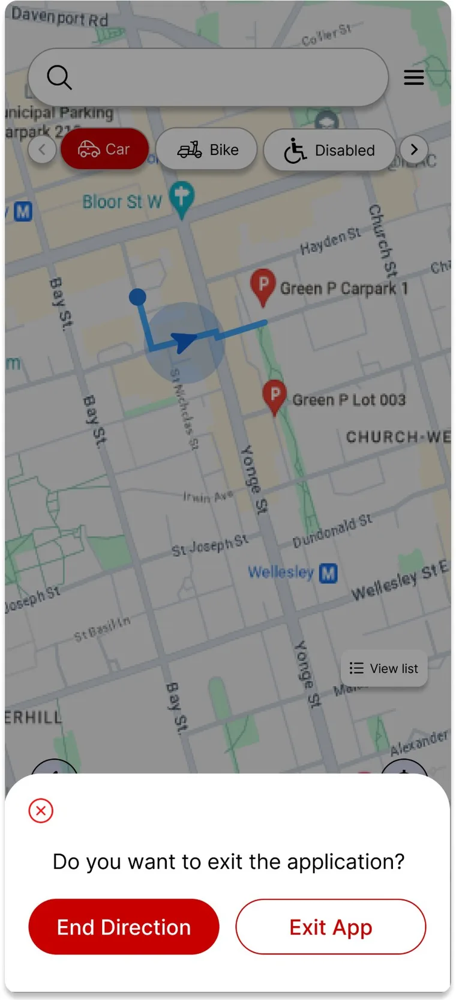
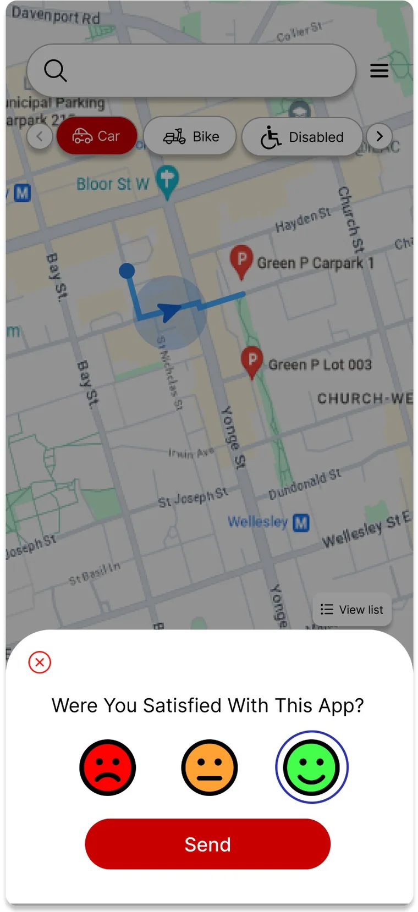
Menu & Profile
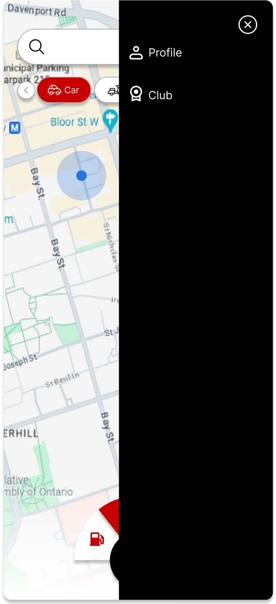
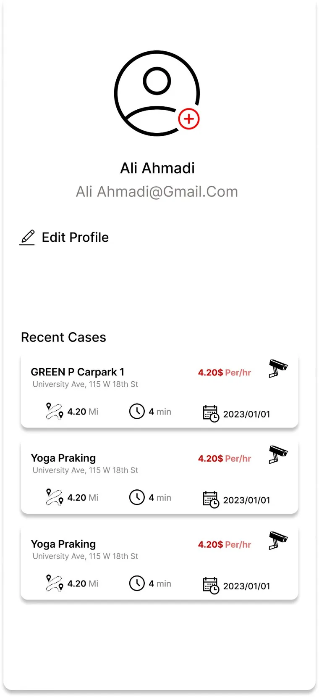
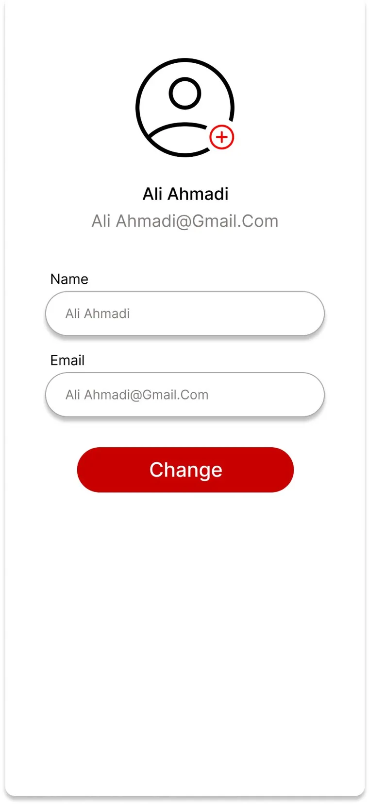
Reflection
The UX decisions here were grounded in UX principles and competitive analysis rather than direct user testing. The design reasoning was strong, but it has not yet been validated with real users.
- Adding an electronic payment option for users to reserve in advance.
- A next iteration would benefit from usability testing on the search and filter flow specifically.
- Enabling users to rate and write reviews for others to benefit from their experiences.